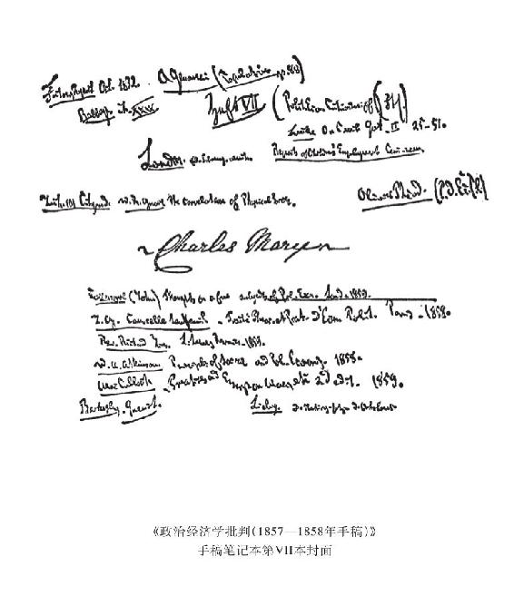

[机器体系和科学发展以及资本主义劳动过程的变化]106
“机器分为：（1）生产动力的机器；（2）单纯传送动力和完成工作的机器。”（拜比吉[《论机器和工厂的节约》1833年巴黎版第20—21页]，[B.]10）
“工厂的标志是各种工人即成年工人和未成年工人的协作，这些工人熟练地勤勉地看管着由一个中心动力不断推动的、进行生产的机器体系，一切工厂，只要它的机械不形成连续不断的体系，或不受同一个发动机推动，都不包括在这一概念之中。属于后一类工厂的例子，有染坊、铸铜厂等。——这个术语的准确的意思使人想到一个由无数机械的和有自我意识的器官组成的庞大的自动机，这些器官为了生产同一个物品而协调地不间断地活动，并且它们都受一个自行发动的动力的支配。”（尤尔[《工厂哲学》1836年布鲁塞尔版第1卷第18—19页]，[B.]13）
在生产过程本身中逐渐消费的资本，或者说固定资本，从严格意义上说，是生产资料。从更广泛的意义上说，整个生产过程和它的每一个要素，以及流通的每一个要素——从物质方面来看——只是资本的生产资料，对资本来说，只有价值才作为目的本身而存在。从物质本身方面来看，原料也是产品的生产资料，等等。
但是，固定资本作为在生产过程本身中逐渐耗尽的资本，其使用价值的规定就是：固定资本在这个过程中只是作为手段被使用，并且它本身只是作为使原料变为产品的作用物而存在。作为这样的生产资料，它的使用价值可以归结为：它只是生产过程运行的工艺条件（生产过程运行的场所），例如建筑物等等，或者，它是真正的生产资料发挥作用的直接条件，例如一切辅助材料。无论建筑物还是辅助材料，又只是进行整个生产过程的物质前提，或者只是使用和保存劳动资料的物质前提。而本来意义上的劳动资料只是在生产范围内并为了生产才被使用的，它没有任何其他的使用价值。
最初，当我们考察价值向资本的过渡时，劳动过程不过包括在资本里，而资本，按其物质条件，按其物质存在来看，表现为这个过程的各种条件的总和，并和这个过程相应，分为一定的、质上不同的各个部分，即劳动材料（正确的概念是劳动材料，而不是原材料），劳动资料和活劳动(1)。一方面，资本按其物质组成来看，分成这三种要素；另一方面，这些要素的运动的统一是劳动过程（或者说这些要素共同加入这一过程），它们的静止的统一是产品。在这种形式中，物质要素——劳动材料、劳动资料和活劳动——只表现为资本所占有的劳动过程本身的基本要素。而这个物质方面——或资本作为使用价值和现实过程的规定——同资本的形式规定完全不相符合。在资本的形式规定自身中，
（1）在资本同劳动能力交换以前，在实际的过程以前，这三个要素只是表现为资本本身在量上的不同的部分，表现为价值量，而作为总和的资本本身则构成这些部分的统一体。这些不同的部分借以存在的那种物质形式，使用价值，丝毫没有改变这一规定的同质性。从形式规定方面看，它们只是这样表现的：资本在量上分为几个部分。
（2）在过程本身内部，从形式来看，劳动这个要素和另外两个要素相互区别的地方只是：后两个要素是不变的价值，而劳动是创造价值的东西。但就使用价值上的差别来说，就物质方面来说，这种差别完全不属于资本的形式规定之内。但是现在，在流动资本（原材料和产品）[VI—44]和固定资本（劳动资料）之间的差别上，作为使用价值的各要素之间的差别，同时表现为作为资本的资本在形式规定上的差别。各要素之间的关系过去只是量的关系，现在则表现为资本本身的质的差别，表现为决定资本的总运动（周转）的东西。劳动材料和劳动产品——劳动过程的这个中和的沉淀物——作为原材料和产品，从物质方面来看，也已经不再是劳动的材料和产品，而是资本本身在各个阶段上的使用价值。
只要劳动资料仍然是本来意义上的劳动资料，像它在历史上直接地被资本纳入资本价值增殖过程时的情形那样，它所经受的就只是形式上的变化，也就是说，现在它不仅从物质方面来看表现为劳动的资料，同时还表现为由资本的总过程决定的特殊的资本存在方式——表现为固定资本。
但是，加入资本的生产过程以后，劳动资料经历了各种不同的形态变化，它的最后的形态是机器，或者更确切些说，是自动的机器体系（即机器体系；自动的机器体系不过是最完善、最适当的机器体系形式，只有它才使机器成为体系），它是由自动机，由一种自行运转的动力推动的。这种自动机是由许多机械器官和智能器官组成的，因此，工人自己只是被当做自动的机器体系的有意识的肢体。在机器中，尤其是在作为自动体系的机器装置中，劳动资料就其使用价值来说，也就是就其物质存在来说，转化为一种与固定资本和资本一般相适合的存在，而劳动资料作为直接的劳动资料加入资本生产过程时所具有的那种形式消失了，变成了由资本本身规定的并与资本相适应的形式。
机器无论在哪一方面都不表现为单个工人的劳动资料。机器的特征决不是像[单个工人的]劳动资料那样，在工人的活动作用于[劳动]对象方面起中介作用；相反地，工人的活动表现为：它只是在机器的运转，机器作用于原材料方面起中介作用——看管机器，防止它发生故障，这和对待工具的情形不一样。工人把工具当做器官，通过自己的技能和活动赋予它以灵魂，因此，掌握工具的能力取决于工人的技艺。相反，机器则代替工人而具有技能和力量，它本身就是能工巧匠，它通过在自身中发生作用的力学规律而具有自己的灵魂，它为了自身不断运转而消费煤炭、机油等等（辅助材料），就像工人消费食物一样。只限于一种单纯的抽象活动的工人活动，从一切方面来说都是由机器的运转来决定和调节的，而不是相反。科学通过机器的构造驱使那些没有生命的机器肢体有目的地作为自动机来运转，这种科学并不存在于工人的意识中，而是作为异己的力量，作为机器本身的力量，通过机器对工人发生作用。
活劳动被对象化劳动所占有——创造价值的力量或活动被自为存在的价值所占有——，这种包含在资本概念中的占有，在以机器为基础的生产中，也从生产的物质要素和生产的物质运动上被确立为生产过程本身的性质。从劳动作为支配生产过程的统一体而囊括生产过程这种意义来说，生产过程已不再是这种意义上的劳动过程了。相反，劳动现在仅仅表现为有意识的机件，它以单个的有生命的工人的形式分布在机械体系的许多点上，被包括在机器体系本身的总过程中，劳动自身仅仅是这个体系里的一个环节，这个体系的统一不是存在于活的工人中，而是存在于活的（能动的）机器体系中，这种机器体系同工人的单个的无足轻重的动作相比，在工人面前表现为一个强大的机体。在机器体系中，对象化劳动在劳动过程本身中与活劳动相对立而成为支配活劳动的力量，占有活劳动的资本就其形式来说就是这样的力量。由于劳动资料转变为机器体系，由于活劳动转变为这个机器体系的单纯的活的附件，转变为机器运转的手段，劳动过程便只是作为资本价值增殖过程的一个环节而被包括进来，这一点从物质方面来看，也被肯定了。
提高劳动生产力和最大限度否定必要劳动，正如我们已经看到的(2)，是资本的必然趋势。劳动资料转变为机器体系，就是这一趋势的实现。在机器体系中，对象化劳动在物质上与活劳动相对立而成为支配活劳动的力量，并主动地使活劳动从属于自己，这不仅是通过对活劳动的占有，而且是在现实的生产过程本身中实现的。在作为机器体系存在的固定资本中，资本作为把创造价值的活动占为己有的价值这样一种关系，同时表现为资本的使用价值与劳动能力的使用价值的关系。
其次，对象化在机器体系中的价值表现为这样一个前提，同它相比，单个劳动能力创造价值的力量作为无限小的量而趋于消失。由于机器体系所造成的规模巨大的生产，产品同生产者的直接需要的任何联系也都消失了，从而同直接使用价值的任何联系也都消失了。产品生产的形式和产品生产的关系已经意味着：产品只是作为价值的承担者被生产出来，而它的使用价值只是实现这一目的的条件。在机器[体系]中，对象化劳动本身不仅直接以产品的形式或者以当做劳动资料来使用的产品的形式出现，而且以生产力本身的形式出现。劳动资料发展为机器体系，对资本来说并不是偶然的，而是使传统的继承下来的劳动资料适合于资本要求的历史性变革。因此，知识和技能的积累，社会智力的一般生产力的积累，就同劳动相对立而被吸收在资本当中，从而表现为资本的属性，更明确些说，表现为固定资本的属性，只要后者是作为真正的生产资料加入生产过程。
因此，机器体系表现为固定资本的最适当的形式，而固定资本——就资本对自身的关系来看——则表现为资本一般的最适当的形式。另一方面，就固定资本被束缚在自己一定的使用价值的存在中这一点来看，它是不符合资本的概念的，因为作为价值来说，资本采取任何特定的使用价值形式都是无所谓的，它可以把任何一种使用价值形式作为自己一视同仁的化身来加以采用或者抛弃。从这方面来看，从资本对外部的关系来看，流动资本同固定资本相比表现为资本的适当形式。
其次，从机器体系随着社会知识的积累、整个生产力的积累而发展来说，代表一般社会劳动的不是劳动，而是资本。社会的生产力是用固定资本来衡量的，它以物的形式存在于固定资本中，另一方面，资本的生产力又随着被资本无偿占有的这种普遍的进步而得到发展。这里无须详细地研究机器体系的发展；而只要求从一般的方面考察；只要劳动资料变为固定资本，就从自己的物质方面失去了自己的直接形式，并且在物质上作为资本同工人相对立。在机器体系中，对工人来说，知识表现为外在的异己的东西，而活劳动则从属于独立发生作用的对象化劳动。只要工人的活动不是[资本的](3)需要所要求的，工人便成为多余的了。
[VII—1](4)因此，只有当劳动资料不仅在形式上被规定为固定资本，而且扬弃了自己的直接形式，从而，固定资本在生产过程内部作为机器来同劳动相对立的时候，而整个生产过程不是从属于工人的直接技巧，而是表现为科学在工艺上的应用的时候，只有到这个时候，资本才获得了充分的发展，或者说，资本才造成了与自己相适合的生产方式。可见，资本的趋势是赋予生产以科学的性质，而直接劳动则被贬低为只是生产过程的一个要素。同价值转化为资本时的情形一样，在资本的进一步发展中，我们看到：一方面，资本是以生产力的一定的现有的历史发展为前提的——在这些生产力中也包括科学——，另一方面，资本又推动和促进生产力向前发展。
因此，资本作为固定资本来发展时所达到的数量和效能（强度），一般说来，表明资本作为资本，作为支配活劳动的力量的发展程度和资本支配整个生产过程的程度。从固定资本表现对象化生产力和对象化劳动的积累这方面来说，情况也是如此。但是，如果说资本只有在机器体系中以及固定资本的其他物质存在形式如铁路等等中（关于这一方面我们以后再谈）才取得自己在生产过程内部作为使用价值的适当的形式，那么这决不是说，这种使用价值，这种机器体系本身就是资本，或者说它作为机器体系的存在同它作为资本的存在是一回事。正像黄金不再是货币时，它不会丧失黄金的使用价值一样，机器体系不再是资本时，它也不会失去自己的使用价值。决不能从机器体系是固定资本的使用价值的最适合的形式这一点得出结论说：从属于资本的社会关系，对于机器体系的应用来说，是最适合的和最好的社会生产关系。

劳动时间——单纯的劳动量——在怎样的程度上被资本确立为唯一的决定要素，直接劳动及其数量作为生产即创造使用价值的决定要素就在怎样的程度上失去作用；而且，如果说直接劳动在量的方面降到微不足道的比例，那么它在质的方面，虽然也是不可缺少的，但一方面同一般科学劳动相比，同自然科学在工艺上的应用相比，另一方面同产生于总生产中的社会组织的、并表现为社会劳动的自然赐予（虽然是历史的产物）的一般生产力相比，却变成一种从属的要素。于是，资本也就促使自身这一统治生产的形式发生解体。
因此，如果说，一方面生产过程从简单的劳动过程向科学过程的转化，也就是向驱使自然力为自己服务并使它为人类的需要服务的过程的转化，表现为同活劳动相对立的固定资本的属性，如果说，单个劳动本身不再是生产的，相反，它只有在征服自然力的共同劳动中才是生产的，而直接劳动到社会劳动的这种上升，表现为单个劳动在资本所代表、所集中的共同性面前被贬低到无能为力的地步，那么，另一方面，一个生产部门的劳动由另一个生产部门的并存劳动107来维持，则表现为流动资本的属性。
在小流通108中，资本把工资预付给工人，工人用工资交换他的消费所必需的产品。工人得到的货币所以具有这种力量，仅仅是因为在他以外同时还有人在劳动；而且，仅仅因为资本占有这个工人的劳动，资本才会以货币形式付给他支取他人劳动的凭证。本人劳动和他人劳动的这种交换，在这里不是以他人同时并存的劳动为中介和条件，而是以资本所作的预付为中介和条件。工人在生产期间能够实现他的消费所必需的物质变换这件事，表现为转到工人手里的那一部分流动资本的属性，并表现为流动资本一般的属性。这一情况不是表现为同时并存的劳动力之间的物质变换，而是表现为资本的物质变换，表现为流动资本的存在。
于是，劳动的一切力量都转化为资本的力量。在固定资本中体现着劳动的生产力（这种生产力存在于劳动之外，并且（在物质上）不以劳动为转移而存在着）。而在流动资本中，一方面，工人本身有重复自己劳动的前提条件，另一方面，工人的这种劳动的交换以其他工人的并存劳动为中介，——这种情况表现为，资本对工人实行预付，另一方面资本又造成各个劳动部门的同时并存。（后面这两个规定其实属于积累。）在流动资本的形式中，资本表现为不同工人之间的中介。
固定资本在它作为生产资料（机器体系是生产资料的最适合的形式）的规定中，只是从两方面生产价值，即增加产品的价值：（1）由于固定资本具有价值，就是说，它本身就是劳动产品，是对象化形式上的一定的劳动量；（2）由于固定资本通过提高劳动的生产力，使劳动能在较短的时间内创造出更大量的维持活劳动能力所必需的产品，从而提高剩余劳动对必要劳动的比例。可见，说什么由于资本家利用固定资本（况且，固定资本本身就是劳动的产品，并且不过是被资本占有的他人劳动的产品）使工人的劳动减轻了（相反，资本家利用机器使工人的劳动失去了一切独立性和吸引力），或者使工人劳动的时间缩短了，所以工人就和资本家分享劳动产品了，这种说法是极其荒谬的资产阶级滥调。
相反，只有在机器使工人能够把自己的更大部分时间用来替资本劳动，把自己的更大部分时间当做不属于自己的时间，用更长的时间来替别人劳动的情况下，资本才采用机器。的确，通过这个过程，生产某种物品的必要劳动量会缩减到最低限度，但只是为了在最大限度的这类物品中使最大限度的劳动价值增殖。第一个方面所以重要，是因为资本在这里——完全是无意地——使人的劳动，使力量的支出缩减到最低限度。这将有利于解放了的劳动，也是使劳动获得解放的条件。
由此可见，罗德戴尔把固定资本说成是和劳动时间无关的、独立的价值源泉，是何等荒谬。109固定资本只有从它本身是对象化劳动时间来说，并且从它创造剩余劳动时间来说，才是这样的源泉。机器体系本身[VII—2]的采用——见前面莱文斯顿的论述(5)——在历史上要以多余的人手为前提。只是在劳动力过剩的地方，机器体系才出现，以便代替劳动。只有在经济学家的想象中，机器体系才对单个工人有帮助。只有使用大量工人，机器体系才能发生作用，而对资本来说，工人的积聚，正如我们看到的(6)，是资本的历史前提之一。机器体系的出现，不是为了弥补劳动力的不足，而是为了把现有的大量劳动力压缩到必要的限度。只有在劳动能力大量存在的地方，机器体系才会出现。（关于这个问题，以后还要返回来谈。）
罗德戴尔断言，机器体系不增加劳动的生产力，因为它不过是代替了劳动，或者说做那种劳动本身用自己的力量不能做的工作，他认为这是他的伟大发现。而属于资本概念的东西却是：增长了的劳动生产力表现为劳动之外的力量的增长和劳动本身的力量的削弱。劳动资料使工人独立——使他变成所有者。机器体系——作为固定资本——则使工人不独立，使他成为被占有者。机器体系所以发生这种作用，只是由于它变成固定资本，而机器体系所以变成固定资本，只是由于工人是以雇佣工人的身份，而且总的说来，从事活动的个人只是以工人的身份同它发生关系。
如果说，在此以前固定资本和流动资本仅仅表现为资本的不同的暂时的规定，那么，现在它们却硬化为资本的特殊存在方式，并且在固定资本之旁出现流动资本。现在有了资本的两个特殊种类。如果就一定生产部门的一笔资本来看，这笔资本就分成这两个部分，或者说按一定比例分成资本的这两个种类。
生产过程内部的区别，最初本来是劳动资料和劳动材料，最后是劳动产品，现在则表现为流动资本（劳动材料和劳动产品）和固定资本[劳动资料]。资本单纯按其物质方面所作的划分，现在被包括在资本的形式本身中，并且表现为使资本分化的东西。
罗德戴尔之流认为资本本身离开劳动可以创造价值，因而也可以创造剩余价值（或利润），对这种观点来说，固定资本——特别是以机器体系为其物质存在或使用价值的资本——是最能使他们的肤浅谬论貌似有理的形式。同他们相反，例如，在《保护劳动》110中指出，是道路的修建者，而不是“道路”本身，可以分享道路的使用者所得到的利益。
至于流动资本，既然要以它确实经过不同的阶段为前提，那么即使流通不中断，流通时间的增减，长短，经过不同流通阶段的难易，也会使一定时间内所能创造的剩余价值减少，——这或是因为再生产[周期]的次数减少了，或是因为生产过程中经常使用的资本量缩减了。在两种情况下，预先存在的价值都没有减少，而是价值增长的速度减慢了。但是，一旦固定资本发展到了一定的规模——正如过去所指出的，固定资本的这种规模是一般大工业发展的尺度，因而也就随大工业的生产力（固定资本本身是这些生产力的对象化，它就是作为预先存在的产品的这种生产力本身）按相同的程度增长——，从这时起，生产过程的任何中断所起的作用都直接使资本本身减少，使资本的预先存在的价值减少。
固定资本的价值只有在生产过程中被消费，才再生产出来。固定资本不被利用，就丧失它的使用价值，没有把它的价值转移到产品上去。因此，在我们这里所考察的意义上，固定资本发展的程度越高，生产过程的连续性或再生产过程的不断进行，就越成为以资本为基础的生产方式的外在的强制性条件。
在机器体系中，资本对活劳动的占有从下面这一方面来看也具有直接的现实性：一方面，直接从科学中得出的对力学规律和化学规律的分解和应用，使机器能够完成以前工人完成的同样的劳动。然而，只有在大工业已经达到较高的阶段，一切科学都被用来为资本服务的时候，机器体系才开始在这条道路上发展；另一方面，现有的机器体系本身已经提供大量的手段。在这种情况下，发明就将成为一种职业，而科学在直接生产上的应用本身就成为对科学具有决定性的和推动作用的着眼点。
但是，这并不是机器体系在整体上产生时所经过的道路，更不是机器体系在细节上不断进展时所走过的道路。机器体系的这种道路是分解——通过分工来实现，这种分工把工人的操作逐渐变成机械的操作，而达到一定地步，机器就会代替工人。（关于力的节省。）因此，在这里直接表现出来的是一定的劳动方式从工人身上转移到机器形式的资本上，由于这种转移，工人自己的劳动能力就贬值了。由此产生了工人反对机器体系的斗争。过去是活的工人的活动，现在成了机器的活动。所以，带着粗暴情欲同工人对立的是资本对劳动的占有，是“好像害了相思病”111似地吞噬活劳动的资本。
活劳动同对象化劳动的交换，即社会劳动确立为资本和雇佣劳动这二者对立的形式，是价值关系和以价值为基础的生产的最后发展。这种发展的前提现在是而且始终是：直接劳动时间的量，作为财富生产决定因素的已耗费的劳动量。但是，随着大工业的发展，现实财富的创造较少地取决于劳动时间和已耗费的劳动量，较多地取决于在劳动时间内所运用的作用物的力量，而这种作用物自身——它们的巨大效率——又和生产它们所花费的直接劳动时间不成比例，而是取决于科学的一般水平和技术进步，或者说取决于这种科学在生产上的应用。（这种科学，特别是自然科学以及和它有关的其他一切科学的发展，本身又和物质生产的发展相适应。）例如，农业将不过成为一种物质变换的科学的应用，这种物质变换能加以最有利的调节以造福于整个社会体。
现实财富倒不如说是表现在——这一点也由大工业所揭明——已耗费的劳动时间和劳动产品之间惊人的不成比例上，同样也表现在被贬低为单纯抽象物的劳动和由这种劳动看管的生产过程的威力之间在质上的不成比例上。劳动表现为不再像以前那样被包括在生产过程中，相反地，表现为人以生产过程的监督者和调节者的身份同生产过程本身发生关系。（关于机器体系所说的这些情况，同样适用于人们活动的结合和人们交往的发展。）这里已经不再是工人把改变了形态的自然物作为中间环节放在自己和对象之间；而是工人把[VII—3]由他改变为工业过程的自然过程作为中介放在自己和被他支配的无机自然界之间。工人不再是生产过程的主要作用者，而是站在生产过程的旁边。
在这个转变中，表现为生产和财富的宏大基石的，既不是人本身完成的直接劳动，也不是人从事劳动的时间，而是对人本身的一般生产力的占有，是人对自然界的了解和通过人作为社会体的存在来对自然界的统治，总之，是社会个人的发展。现今财富的基础是盗窃他人的劳动时间，这同新发展起来的由大工业本身创造的基础相比，显得太可怜了。一旦直接形式的劳动不再是财富的巨大源泉，劳动时间就不再是，而且必然不再是财富的尺度，因而交换价值也不再是使用价值的尺度。群众的剩余劳动不再是一般财富发展的条件，同样，少数人的非劳动不再是人类头脑的一般能力发展的条件。于是，以交换价值为基础的生产便会崩溃，直接的物质生产过程本身也就摆脱了贫困和对立的形式。个性得到自由发展，因此，并不是为了获得剩余劳动而缩减必要劳动时间，而是直接把社会必要劳动缩减到最低限度，那时，与此相适应，由于给所有的人腾出了时间和创造了手段，个人会在艺术、科学等等方面得到发展。
资本本身是处于过程中的矛盾，因为它竭力把劳动时间缩减到最低限度，另一方面又使劳动时间成为财富的唯一尺度和源泉。因此，资本缩减必要劳动时间形式的劳动时间，以便增加剩余劳动时间形式的劳动时间；因此，越来越使剩余劳动时间成为必要劳动时间的条件——生死攸关的问题。一方面，资本唤起科学和自然界的一切力量，同样也唤起社会结合和社会交往的一切力量，以便使财富的创造不取决于（相对地）耗费在这种创造上的劳动时间。另一方面，资本想用劳动时间去衡量这样造出来的巨大的社会力量，并把这些力量限制在为了把已经创造的价值作为价值来保存所需要的限度之内。生产力和社会关系——这二者是社会个人的发展的不同方面——对于资本来说仅仅表现为手段，仅仅是资本用来从它的有限的基础出发进行生产的手段。但是，实际上它们是炸毁这个基础的物质条件。
“一个国家只有在劳动6小时而不是劳动12小时的时候，才是真正富裕的。财富〈现实的财富〉不是对剩余劳动时间的支配，而是除了耗费在直接生产上面的时间以外，每一个个人和整个社会可以自由支配的时间。”[查·迪尔克《国民困难的原因及其解决办法》1821年伦敦版第6页]112
自然界没有造出任何机器，没有造出机车、铁路、电报、自动走锭精纺机等等。它们是人的产业劳动的产物，是转化为人的意志驾驭自然界的器官或者说在自然界实现人的意志的器官的自然物质。它们是人的手创造出来的人脑的器官；是对象化的知识力量。固定资本的发展表明，一般社会知识，已经在多么大的程度上变成了直接的生产力，从而社会生活过程的条件本身在多么大的程度上受到一般智力的控制并按照这种智力得到改造。它表明，社会生产力已经在多么大的程度上，不仅以知识的形式，而且作为社会实践的直接器官，作为实际生活过程的直接器官被生产出来。
再从另一方面看，固定资本的发展也表明财富一般发展的程度，或者说资本发展的程度。直接以使用价值为目的的生产，以及直接以交换价值为目的的生产，其对象都是供消费用的产品本身。生产固定资本的那部分生产既不生产直接的消费品，也不生产直接的交换价值，至少不生产可以直接实现的交换价值。因此，越来越大的一部分生产时间耗费在生产资料的生产上，这种情况取决于已经达到的生产率水平，取决于用一部分生产时间就足以满足直接生产的需要。
这就要求社会能够等待；能够把相当大一部分已经创造出来的财富从直接的享受中，也从以直接享受为目的的生产中抽出来，以便（在物质生产过程本身内部）把这一部分财富用到非直接生产的劳动上去。这就要求已经达到的生产率和相对的富裕程度都有高度水平，而且这种高度水平是同流动资本转变为固定资本成正比的。正如相对剩余劳动的大小取决于必要劳动的生产率一样，用于生产固定资本的劳动时间——活劳动时间和对象化劳动时间——的大小取决于用于直接生产产品的劳动时间的生产率。
过剩人口（从这个观点来看），以及过剩生产，是达到这种情况的条件。这就是说，用在直接生产上的时间所取得的成果必定相对说来很大，超出了这些生产部门所使用的资本的再生产的直接需要。固定资本直接带来的成果越少，越少参与直接生产过程，这种相对的过剩人口和过剩生产就必定越多；因而，修建铁路、运河、自来水、电报等等场合，同制造直接用于直接生产过程的机器的场合相比，过剩人口和过剩生产就必定多些。由此（我们以后将回过来谈这一点）就产生出——通过现代工业经常生产过剩和经常生产不足的形式——这样一种状态：流动资本向固定资本的转化有时过多有时过少，这种不平衡状态经常波动和痉挛。
〔在必要劳动时间之外，为整个社会和社会的每个成员创造大量可以自由支配的时间（即为个人生产力的充分发展，因而也为社会生产力的充分发展创造广阔余地），这样创造的非劳动时间，从资本的立场来看，和过去的一切阶段一样，表现为少数人的非劳动时间，自由时间。资本还添加了这样一点：它采用技艺和科学的一切手段，来增加群众的剩余劳动时间，因为它的财富直接在于占有剩余劳动时间；因为它的直接目的是价值，而不是使用价值。
于是，资本就违背自己的意志，成了为社会可以自由支配的时间创造条件的工具，使整个社会的劳动时间缩减到不断下降的最低限度，从而为全体[社会成员]本身的发展腾出时间。但是，资本的趋势始终是：一方面创造可以自由支配的时间，另一方面把这些可以自由支配的时间变为剩余劳动。如果它在第一个方面太成功了，那么，它就要吃到生产过剩的苦头，这时必要劳动就会中断，因为资本无法实现剩余劳动。
这个矛盾越发展，下述情况就越明显：生产力的增长再也不能被占有他人的剩余劳动所束缚了，工人群众自己应当占有自己的剩余劳动。当他们已经这样做的时候——这样一来，可以自由支配的时间就不再是对立的存在物了——，那时，一方面，社会的个人的需要将成为必要劳动时间的尺度，另一方面，社会生产力的发展将如此迅速，以致尽管生产将以所有的人富裕为目的，所有的人的可以自由支配的时间还是会增加。因为真正的财富就是所有个人的发达的生产力。那时，财富的尺度[VII—4]决不再是劳动时间，而是可以自由支配的时间。以劳动时间作为财富的尺度，这表明财富本身是建立在贫困的基础上的，而可以自由支配的时间只是在同剩余劳动时间的对立中并且是由于这种对立而存在的，或者说，个人的全部时间都成为劳动时间，从而使个人降到仅仅是工人的地位，使他从属于劳动。因此，最发达的机器体系现在迫使工人比野蛮人劳动的时间还要长，或者比他自己过去用最简单、最粗笨的工具时劳动的时间还要长。〕
“假定一个国家的全部劳动所生产的只够维持全部人口的生活，那就不会有剩余劳动，因而也就没有什么东西可以作为资本积累起来。假定人们在一年中所生产的足够维持他们两年的生活，那就或者是一年的消费资料必须毁掉，或者是人们必须停止一年的生产劳动。但是，剩余产品——或者说资本——的所有者……会把人们用于某种不是直接生产的工作，例如用来装配机器等等。如此反复不已。”（《国民困难的原因及其解决办法》1821年伦敦版第4—5页）
〔正如随着大工业的发展，大工业所依据的基础——占有他人的劳动时间——不再构成或创造财富一样，随着大工业的这种发展，直接劳动本身不再是生产的基础，一方面因为直接劳动变成主要是看管和调节的活动，其次也是因为，产品不再是单个直接劳动的产品，相反地，作为生产者出现的，是社会活动的结合。
“当分工发达的时候，几乎每个人的劳动都是整体的一部分，它本身没有任何价值或用处。因此工人不能指任何东西说：这是我的产品，我要留给我自己。”（[托·霍吉斯金]《保护劳动[反对资本的要求]》[1825年伦敦版第25页]，[L.]XI，1、2）
在直接的交换中，单个的直接劳动实现在某个特殊的产品或产品的一部分中，而它[单个的直接劳动]的共同的、社会的性质——劳动作为一般劳动的对象化和作为满足一般需要的[手段的]性质——只有通过交换才被肯定。相反，在大工业的生产过程中，一方面，发展为自动化过程的劳动资料的生产力要以自然力服从于社会智力为前提，另一方面，单个人的劳动在它的直接存在中已成为被扬弃的个别劳动，即成为社会劳动。于是，这种生产方式的另一个基础也消失了。〕
在资本的生产过程本身内部，用于生产固定资本的劳动时间和用于生产流动资本的时间的关系，就像剩余劳动时间和必要劳动时间的关系一样。为满足直接需要的生产越是具有生产率，就越能有更大的一部分生产用来满足生产的需要本身，换句话说，用来生产生产资料。既然固定资本的生产，甚至从物质方面来看，其直接目的不是为了生产直接的使用价值，也不是为了生产资本的直接再生产所需要的价值，即在创造价值的过程中又相对地代表使用价值的价值；相反地，固定资本的生产是为了生产创造价值的手段，就是说，它不是为了取得作为直接对象的价值，而是为了创造价值，为了取得价值增殖的手段这一生产的直接对象——从物质上看，价值的生产以生产对象本身的形式表现为生产的目的，也就是资本的生产力对象化这一目的，资本生产价值的能力对象化这一目的——，既然如此，那么，正是在固定资本的生产中，和在流动资本的生产中相比，资本在更高程度上使自己成为目的本身并作为资本发挥作用。因此，从这方面来看，固定资本的规模和固定资本的生产在整个生产中所占的规模，也是以资本的生产方式为基础的财富发展的尺度。
“工人人数取决于允许工人消费的并存劳动的产品的量，从这个意义上来说，工人人数取决于流动资本[的量]。”（[托·霍吉斯金]《保护劳动[反对资本的要求]》[1825年伦敦版第20页]）
上面从一些不同的经济学家的著作中摘录的引文(7)，都把固定资本看做是固着在生产过程中的那部分资本。
“在巨大的生产过程中，流动资本是被消费的；而固定资本只是被使用。”（[1847年11月6日]《经济学家》[第219期第1271页]，[L.]VI，1）
这是错误的，这仅仅适用于本身被固定资本消费的那部分流动资本——辅助材料。如果把“巨大的生产过程”当做直接生产过程来看，那么，在这个过程中被消费的仅仅是固定资本。但是生产过程内的消费，事实上就是使用，磨损。
其次，固定资本的较大的耐久性也不应单纯从物质上来理解。制造我睡觉的床所用的铁和木材，或者建造我居住的房屋所用的石头，或者装饰宫殿用的大理石雕像，这一切都像用来制造机器的铁和木材等等一样耐久。但是耐久性所以是工具、生产资料的条件，这不仅是由于技术上的原因，即金属等等是一切机器的主要材料，而且是由于工具要在不断重复的生产过程中反复地起同一种作用。作为生产资料，它的耐久性，是它的使用价值的直接要求。生产资料越是需要时常更新，费用就越大，就越是需要把更大一部分资本无益地花费在它上面。它的耐久性就是它作为生产资料而存在。它的耐久性就是它的生产力的提高。相反地，流动资本如果不变为固定资本，它的耐久性就同生产行为本身毫无关系，因而就不是概念上所包含的要素。在投入消费储备的各种物品当中，有些物品由于是很缓慢地被消费的，并且能被许多个人轮流消费，因而被规定为固定资本，这种情况涉及到一些进一步的规定（租赁代替出售，利息等等），关于这些规定，我们在这里还没有谈到。
[VII—5](8)“自从在不列颠的制造业中普遍运用无生命的机器以来，除了少数的例外，人都被当做次要的和附属的机器，人们对于改善木材和金属等原料远比对于改善人的身体和精神要重视得多。”（罗·欧文《论人性的形成》1840年伦敦版第31页）
〔真正的经济——节约——是劳动时间的节约（生产费用113的最低限度——和降到最低限度）。而这种节约就等于发展生产力。可见，决不是禁欲，而是发展生产力，发展生产的能力，因而既是发展消费的能力，又是发展消费的资料。消费的能力是消费的条件，因而是消费的首要手段，而这种能力是一种个人才能的发展，生产力的发展。
节约劳动时间等于增加自由时间，即增加使个人得到充分发展的时间，而个人的充分发展又作为最大的生产力反作用于劳动生产力。从直接生产过程的角度来看，节约劳动时间可以看做生产固定资本，这种固定资本就是人本身。
此外，直接的劳动时间本身不可能像从资产阶级经济学的观点出发所看到的那样永远同自由时间处于抽象对立中，这是不言而喻的。劳动不可能像傅立叶所希望的那样成为游戏，——不过，他能宣布最终目的不是把分配，而是把生产方式本身提到更高的形式，这依然是他的一大功绩。自由时间——不论是闲暇时间还是从事较高级活动的时间——自然要把占有它的人变为另一主体，于是他作为这另一主体又加入直接生产过程。对于正在成长的人来说，这个直接生产过程同时就是训练，而对于头脑里具有积累起来的社会知识的成年人来说，这个过程就是[知识的]运用，实验科学，有物质创造力的和对象化中的科学。对于这两种人来说，只要劳动像在农业中那样要求实际动手和自由活动，这个过程同时就是身体锻炼。
正如资产阶级经济学体系在我们面前逐步展开那样，它的自我否定也是如此，而这种否定便是它的最终结果。我们现在研究的还是直接的生产过程。如果我们从整体上来考察资产阶级社会，那么社会本身，即处于社会关系中的人本身，总是表现为社会生产过程的最终结果。具有固定形式的一切东西，例如产品等等，在这个运动中只是作为要素，作为转瞬即逝的要素出现。直接的生产过程本身在这里只是作为要素出现。生产过程的条件和对象化本身也同样是它的要素，而作为它的主体出现的只是个人，不过是处于相互关系中的个人，他们既再生产这种相互关系，又新生产这种相互关系。这是他们本身不停顿的运动过程，他们在这个过程中更新他们所创造的财富世界，同样地也更新他们自身。〕
[……]
我们在上面已经指出，生产力（固定资本）所以能把价值转给[生产出来的产品]，只是因为它具有价值，因为它本身是被生产出来的，本身是一定量的对象化劳动时间。但是，这里还要加上自然作用物，例如水、土地（特别是这土地）、矿藏等等，它们被占有，从而具有交换价值，因此作为价值列入生产费用。总之，这就是要加上土地所有制（包括土地、矿藏、水）。本身不是劳动产品的那些生产资料，它们的价值还不属于这里讨论的范围，因为这些生产资料不是从考察资本本身得出来的。对于资本来说，它们首先表现为现成的历史的前提。作为这种前提，我们这里把它们撇开不谈。只有与资本相适应而变化了的土地所有制形式——或者作为决定价值的量的自然作用物——，才属于资产阶级经济学体系考察的范围。在我们目前的分析阶段上，对于考察资本来说，把土地等看做固定资本的形式丝毫不会使问题发生变化。
因为在已经生产出来的生产力这个意义上的固定资本，作为生产的作用物，会增加一定时间内创造的使用价值的量，所以，如果它加工的原料不增加，它本身就不可能增加（在加工工业中就是这样。在采掘工业中，例如渔业和采矿业，劳动只是为了克服获取和占有原产品或原始产品所遇到的障碍。这里的生产不是加工原料，而只是占有现存的原产品。相反地在农业中，原料就是土地本身；流动资本就是种子等等）。可见，在更大的规模上使用固定资本，是以扩大由原料构成的那部分流动资本为前提的；因而总的说来，是以资本的增加为前提的。同样，是以减少（相对减少）同活劳动相交换的那部分资本为前提的。
在固定资本中，资本不仅也在物质上作为充当新劳动的手段的对象化劳动而存在，而且作为这样一种价值而存在，这种价值的使用价值就是新价值的创造。可见，固定资本的存在主要地是它作为生产资本的存在。因此，以资本为基础的生产方式的已经达到的发展程度——换句话说，资本本身已经在多大的程度上成为它自己的生产的前提条件，即以自身为前提——，是以固定资本的现有规模来衡量的；不仅是以固定资本的量，而且是以固定资本的质来衡量的。
最后，在固定资本中，劳动的社会生产力表现为资本固有的属性；它既包括科学的力量，又包括生产过程中社会力量的结合，最后还包括从直接劳动转移到机器即死的生产力上的技巧。相反地，在流动资本中，劳动的交换，不同劳动部门的交换，它们的交错连结和形成体系，生产劳动的并存，表现为资本的属性。
(1) 见《马克思恩格斯全集》中文第2版第30卷第256—257页。——编者注
(2) 见《马克思恩格斯全集》中文第2版第30卷第406页。——编者注
(3) 手稿此处缺损。——编者注
(4) 马克思在手稿的此处注明：“本笔记本从1858年2月底开始使用”。——编者注
(5) 见本卷第82页和《马克思恩格斯全集》中文第2版第31卷第87—88页。——编者注
(6) 见《马克思恩格斯全集》中文第2版第30卷第587—593页。——编者注
(7) 见《马克思恩格斯全集》中文第2版第31卷第85—88页。——编者注
(8) 在这一页手稿的开头，马克思亲笔注明了日期：“1858年3月”。——编者注
106 这部分关于机器体系和科学应用的发展的论述写在手稿第V I笔记本第4 3页—第V I I笔记本第6页上。马克思在《资本论》第一卷《资本的生产过程》中分析相对剩余价值的生产时，也论述了机器体系和科学应用的发展问题。和《资本论》不同的是，本手稿是在论述《资本的流通过程》中分析固定资本时论述这个问题的。手稿中的这部分比《资本论》中的相关论述内容更为广泛。这部分摘自《马克思恩格斯全集》中文第2版第3 1卷第8 8 —1 1 1页，标题是编者加的。——1 8 2 。
107 马克思在1861—1863年经济学手稿的《剩余价值理论》部分分析托·霍吉斯金的观点时，对并存劳动的概念作过类似的分析。马克思指出：“从某种意义上说，分工无非是并存劳动，即表现在不同种类的产品（或者更确切地说，商品）中的不同种类的劳动的并存。”（见马克思《政治经济学批判（1861—1863年手稿）》第XV笔记本第868页）——191。
108 在手稿中，马克思把小流通和大流通区分开。大流通是指包括生产过程和流通过程在内的整个流通过程；小流通则是指与生产过程并列的单纯的流通过程。参看《马克思恩格斯全集》中文第2版第31卷第68—73页。——191。
109 马克思在《政治经济学批判（1861—1863年手稿）》第VI笔记本第262—265页，第IX笔记本第398—399页， 也曾对詹·罗德戴尔关于利润的观点加以考察，相关内容可参看《马克思恩格斯全集》中文第2版第31卷第86—88页。——193。
110 指托·霍吉斯金《保护劳动反对资本的要求》1825年伦敦版。这本小册子第16页上说：“很容易理解，为什么……道路修建者应当得到一部分只有道路使用者才能从道路得到的利益；但是我不理解，为什么所有这些利益都应当属于道路本身，并且由那些既不修建道路也不使用道路的人以他们的资本的利润为名据为己有。”马克思在《政治经济学批判（1861—1863年手稿）》第XV笔记本第863—890页，第XIII笔记本第670a页，第XVIII笔记本第1084—1086页对托·霍吉斯金的观点作了更详细的评价。——194。
111 “害了相思病”，见歌德《浮士德》第1部第5场《莱比锡的欧北和酒寮》，马克思在《资本论》第一卷第五章第2节《价值增殖过程》（见《马克思恩格斯文集》第5卷第227页）中曾谈到资本是自行增殖的价值，它以“好像害了相思病”的劲头开始“劳动”。——195、487。
112 马克思认为《国民困难的原因及其解决办法》这本小册子“包含一个超过大·李嘉图的本质上的进步”，这是马克思在《政治经济学批判（1861—1863年手稿）》第XIV笔记本第852页中对小册子的作者关于剩余价值源泉等问题的观点所作的评价。马克思在这里引用的小册子中的引文是带解释性的意译，是用马克思的术语对作者的思想所做的转述。——197。
113 生产费用这一术语，马克思在这里是在“商品的内在的生产费用等于商品的价值”，也就是“等于商品生产所必需的劳动时间总量”（见马克思《政治经济学批判（1861—1863年手稿）》第XIV笔记本第788页）这一意义上使用的，而不是指只支付商品中包含的一部分劳动时间的资本家所耗费的生产费用（并见注36）。——203。